Hydrologic and Erosion Modeling
Helena Mitasova
Learning objectives
- identify geospatial modeling of landscape processes
- distinguish spatially averaged and distributed models
- compare methods for spatial hydrologic modeling
- apply modeling soil erosion, sediment transport and deposition
Geospatial modeling of processes
- Numerical simulations: tools for gaining new knowledge - virtual experiments
- Geospatial numerical simulations: the modeled quantities are function of a location on Earth
- Geospatial models have evolved:
- from: empirical, spatially averaged, static
- to: process-based, spatially explicit and dynamic with
the aim to predict modeled quantity at any point in space and time
- Most geospatial models combine empirical and process-based approaches
Modeling components
- Modeled quantity:
water depth [m], discharge [m$^3$/s], pollutant concentration[mg/l]
- Spatial and temporal scale:
e.g. modeling a first order stream may require 1m spatial and 1 min temporal resolution
- Configuration space and interactions:
water depth depends on precipitation, topography, soils, land use
- Governing equations:
continuity equations, diffusion, ...
Geospatial representation
- Modeled quantities and environmental variables can be represented by continuous georeferenced fields
- To support numerical simulations these fields need to be discretized:
- spatially averaged units: discrete polygons (hydrologic units, hillslope elements, landscape patches)
- spatially distributed representation: structured and unstructured meshesi (grids), or random particles
- modeled quantities can also evolve along networks (streams, sewer networks) or represent discrete objects (particles, agents)
Spatially averaged models
- Spatially averaged models predict the modeled variable for each averaged unit, such as watershed,
the result is discrete polygons or a number

Spatially distributed models
- Spatially distributed or spatially explicit models predict
the variable at any point in space and the result is continuous field

Geospatial modeling and GIS
- workflow using standard GIS tools: simple empirical models with physics based components
- models fully integrated as modules: complex physics-based or empirical models
- models linked to GIS as extensions or add-ons: common structure and interface
- complex modeling systems linked through data: GIS is used for input data processing,
results analysis and visualization, but the model is independent from GIS.
- complex modeling systems can incorporate selected GIS capabilities
Hydrologic modeling
surface water flow
Empirical model: Rational equation
- Simplest approximation of discharge from small watersheds
- Assumes steady state, uniform rainfall excess and constant velocity
- Discharge is then sum of rainfall excess produced by each grid cell routed to the outlet
Rational equation
$$ Q = C \, i \, A $$
- $Q$ [$\rm m^3/s$] is maximum rate of runoff (discharge)
- $C$ is runoff coefficient
(ratio of rainfall that becomes runoff : forest 0.05-0.25, pavement 0.75-0.95)
- $i$ [$\rm m/s$] average rainfall intensity
- $A$ [$\rm m^2$] is upslope contributing area
- to determine $i$ we need time to concentration
(time water needs to flow along the longest flowpath to reach the outlet),
duration of rainfall needed to reach the steady state
Rational equation
$$ Q = C \, i \, A $$


Spatially Distributed Models
From geometry-based routing to continuity equation
- a) DEM with depression
- b) least cost path
- c) depression as sink
- d) water accumulates in depression: kinematic wave
- e) water fills depression and flows out: diffusive wave
- f) predefined channel through depression
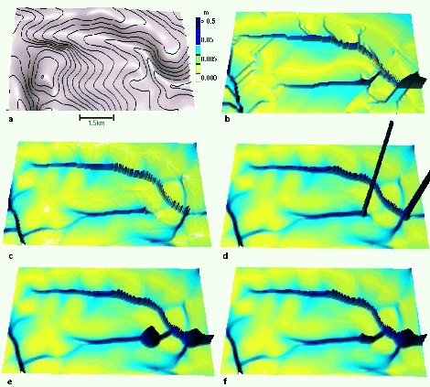
Dynamic Hydrologic Models
Flow modeling with diffusion term: process-bsed simulation of flow through depression
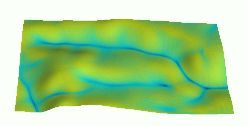
Instead of filling the DEM, we fill the depression with water
Path sampling method
- duality between particle and field representation
- path sampling: water evolving according to the shallow
water bivariate continuity equation - drift and diffusion


Overland water flow
Path sampling based simulation of water flow within a small agricultural watershed
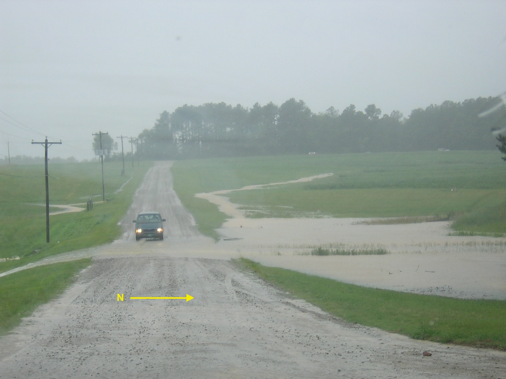
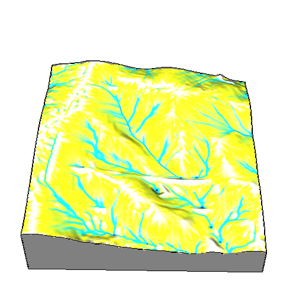
Note simulation of ponding and dispersed flow over the road
Water flow in a suburb
High resolution (sub-meter) modeling of runoff
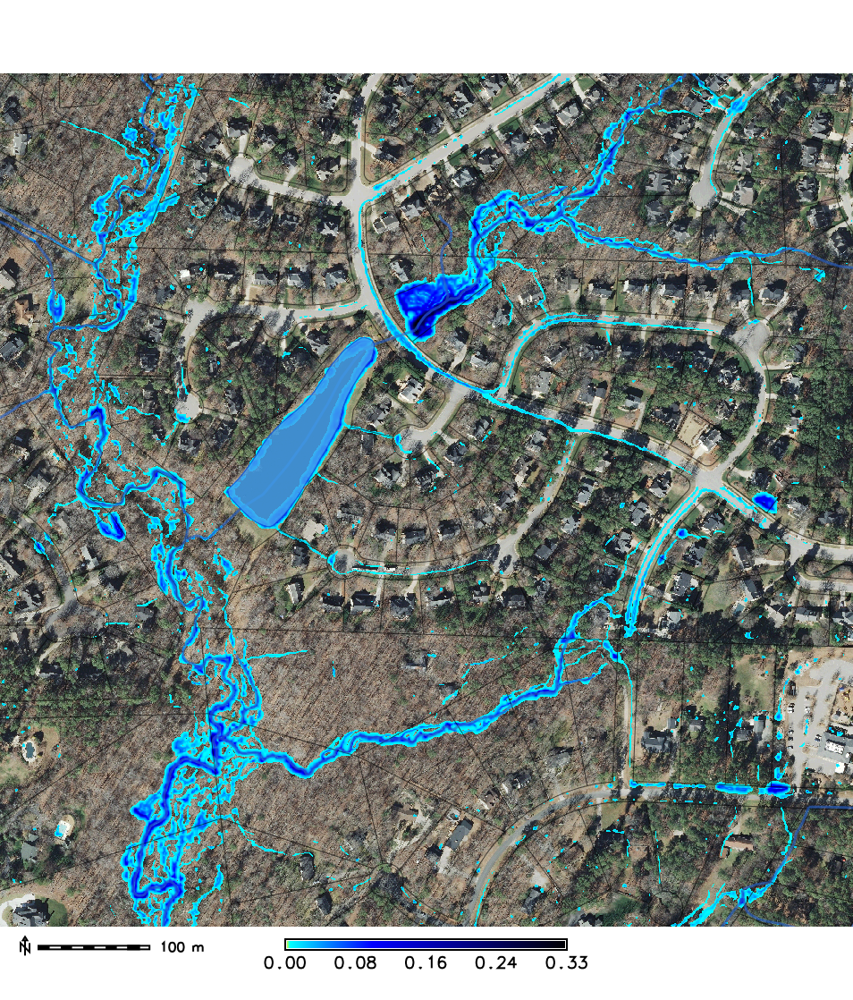

Note (a) the role of stream buffer in storing water and slowing down the flow,
(b) accurate routing of water on roads along curbs indicating high accuracy of the lidar-based DEM
Soil erosion modeling
- Modeled quantity: sediment transport rate [kg/(ms)], net erosion/deposition rate [kg/(m$^2$s)]
- Spatial and temporal scale: from hillslopes to watersheds, minutes (storms), annual rates
- Configuration space and interactions: sediment transport depends on water flow, topography, soil properties, land use
- Governing equations: continuity equation, diffusion, proliferation and decay
Sediment transport equations
Assuming steady state flow, sediment transport by shallow water flow
$q_s$ [kg/(ms)] can be approximated by sediment transport capacity $T_c$:
$$ q_s \approx T_c = K_T A^m (\sin \gamma)^n$$
- where $A$ is contributing area as measure of water flow
- $K_T$ is transport capacity coefficient
- $\gamma$ is slope angle
- $m,n$ are empirical coefficients, control the relative influence of flow accumulation and slope
Evolution of sediment transport
Water flow accumulates during rainfall, lower slope at foot of hillslopes reduces
sediment transport capacity
 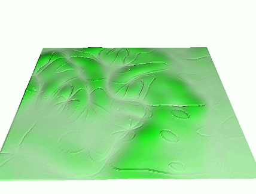
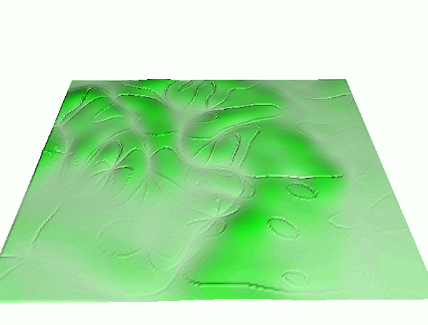
Net erosion and deposition
Spatial pattern of net erosion and deposition estimated as change in sediment transport capacity
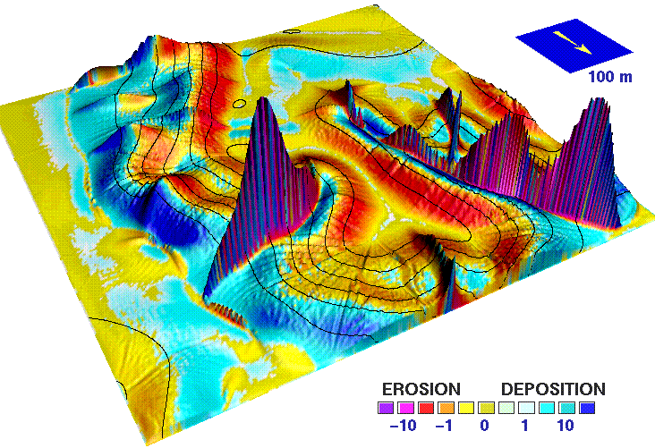
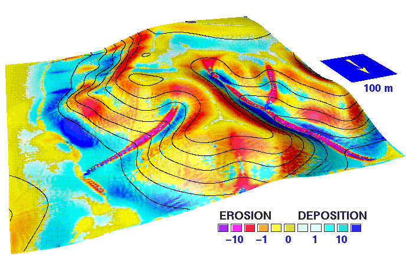
Net erosion and deposition draped over sediment transport capacity surface (left) and draped over
elevation surface (right)
Sediment transport capacity regimes
Spatial pattern of sediment transport: prevailing sheet flow (a, m=0.6),
concentrated flow (b, m=1.5), spatially variable flow regime (c)
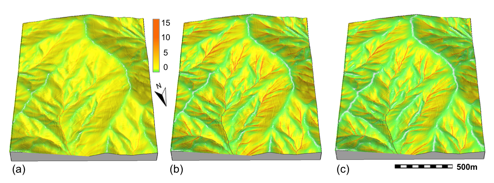
Net erosion-deposition regimes
Spatial pattern of erosion-deposition for:
sheet flow (a, m=0.6), concentrated flow (b, m=1.5) and spatially variable flow regime (c)
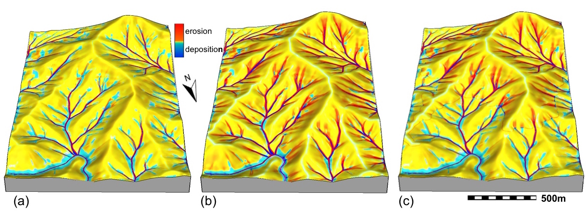
Net erosion and deposition
Net erosion and deposition rate =
change in sediment transport capacity $T_c$ in the direction of flow $\alpha$ =
divergence of the sediment transport vector field:
$$d_s =\nabla\cdot {\bf q}_s \approx {\partial (T_c \cos \alpha ) \over {\partial x}} + {\partial (T_c \sin \alpha ) \over {\partial y}}$$
Equation is easy to compute using functions for partial derivatives and map algebra. Note that partial derivatives
of a surface can also be computed using its slope $\beta$ and aspect $\alpha$ and keep in mind that instead of elevation our surface is the sediment
transport capacity field:
$$ {{\partial z} \over {\partial x}} = \tan \beta_s \cos \alpha_s $$
$$ {{\partial z} \over {\partial y}} = \tan \beta_s \sin \alpha_s $$
Empirical equations
Universal Soil Loss Equation (USLE, RUSLE)
$$E=R.K.L.S.C.P$$
where empirical factors/coefficients are:
- R - rainfall erosivity factor
- K - soil erodibility factor
- L - hillslope length or contributing area
- S - slope steepness factor
- C - cover-management factor
- P - protection measures factor
$L$ is a function of water flow over tilted plane, for complex topography
we can replace it by $A$, upslope contributing area and modify RUSLE
to estimate sediment transport capacity and net erosion-deposition
as a change in sediment transport in the direction of flow.
Net erosion and deposition
Application to small rural watershed with spatially variable land cover
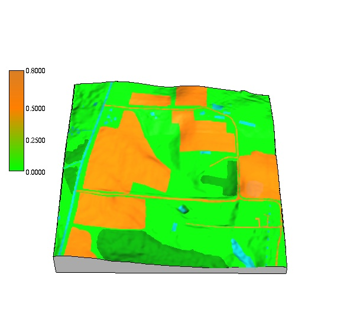

Read
Brief theoretical background document for detailed description of the equations and units
used in the assignment
Land use management application
Redesign land use to reduce sediment transport
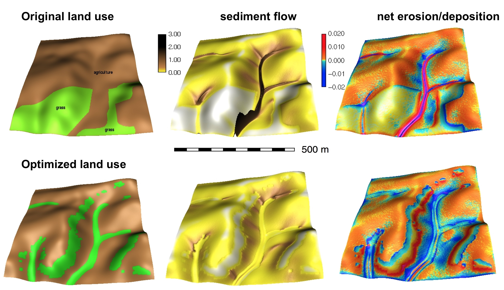
Land use change application
Impact of construction on overald flow and erosion
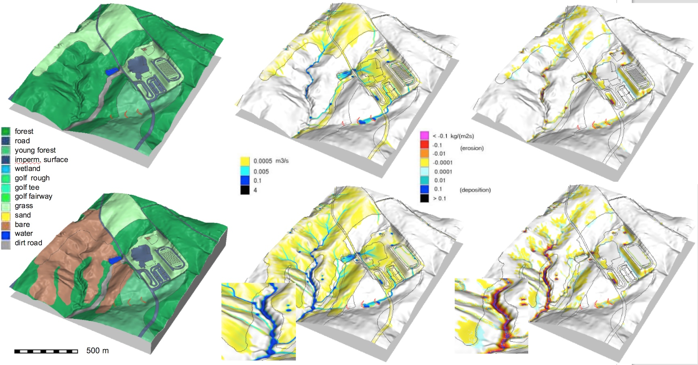
Note the highest erosion rates along the stream banks
Summary
- we defined spatially averaged and distributed models and explained linking GIS and landscape process modeling
- we compared methods for spatial hydrologic modeling from simple empirical equation to process-based models
- we explained modeling soil erosion, sediment transport and deposition using empirical and processed based models
- we learned about applications of flow modeling using high resolution, lidar-based DEMs